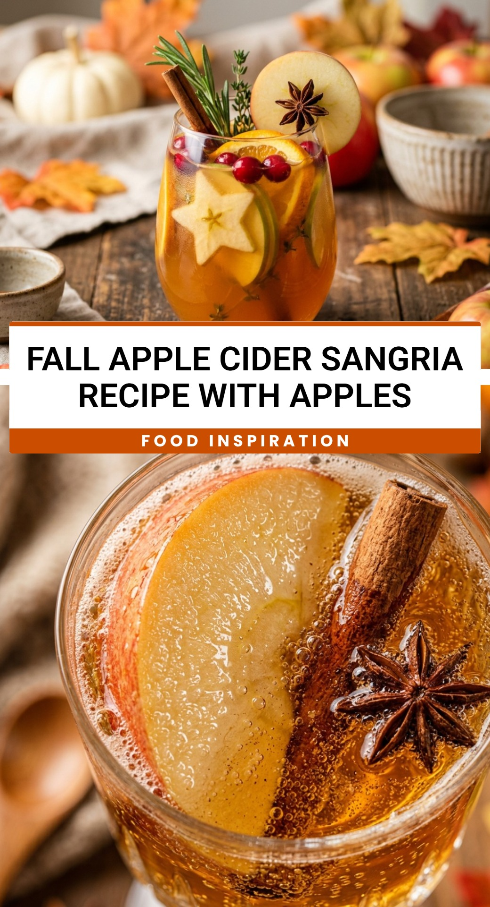

Fall Apple Cider Sangria Recipe With Apples
October 1, 2026

When the air turns crisp and the leaves start to change, there is nothing quite as comforting as the flavors of autumn. This Fall Apple Cider Sangria Recipe With Apples captures the very essence of the season in a single glass. It is a delightful blend of crisp white wine, sweet apple cider, and warm spices that will make your home feel cozy and festive.
Recipe Information
Prep Time: 15 minutes
Cook Time: 0 minutes
Total Time: 2 hours 15 minutes (includes chilling time)
Servings: 6 servings
Difficulty Level: Easy
Nutrition Information
Calories per serving: 215 kcal
Protein: 1g
Carbohydrates: 28g
Fat: 0g
Fiber: 2g
Sugar: 22g
Sodium: 12mg